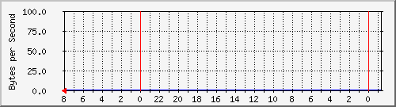
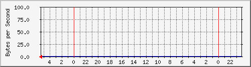
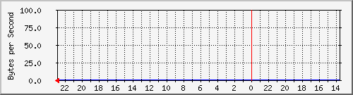
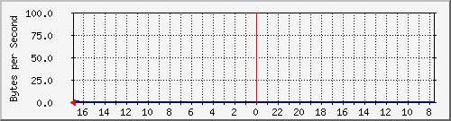
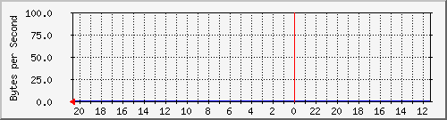

Description: CPU 1 utlization

CPU: 2
Description: CPU 2 utlization

CPU: 3
Description: CPU 3 utlization

CPU: 4
Description: CPU 4 utlization

Average CPU
Description: Average CPU utlization across all 4 CPUs

CPU usage
Description: Memory in use